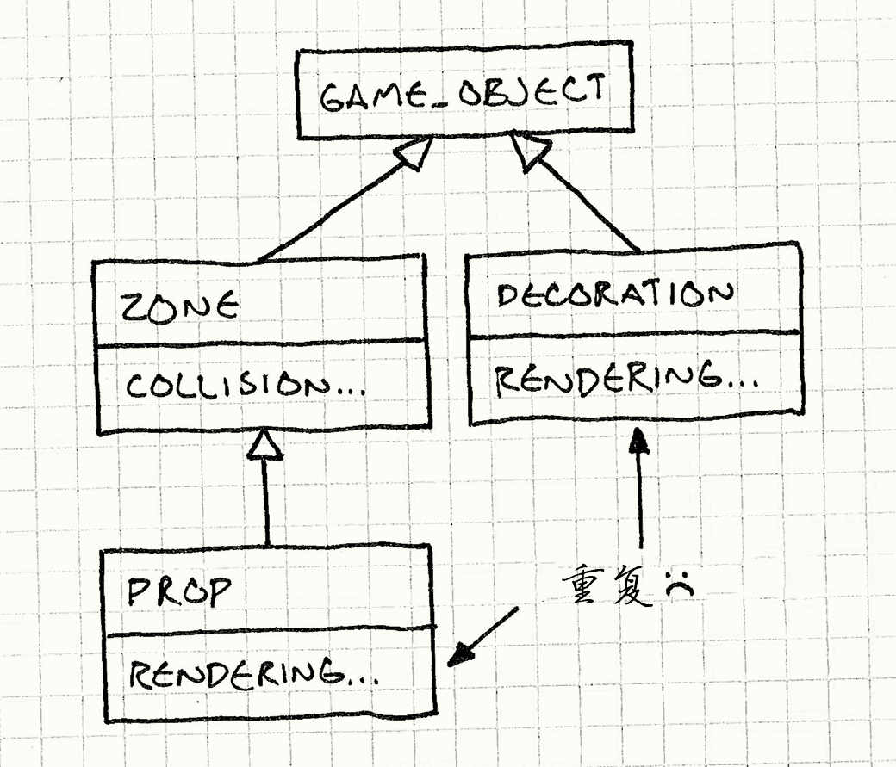

组件
Game Programming Patterns解耦模式
意图
允许单一的实体跨越多个域，无需这些域彼此耦合。
动机
比方说，我们正构建平台跳跃游戏。 意大利水管工已经有人做了，因此我们将出动丹麦面包师，Bjørn。 照理说，会有一个类来表示友好的糕点厨师，包含他在比赛中做的一切。
由于玩家控制他，这意味着读取控制器的输入然后转化为运动。 而且，当然，他需要与关卡相互作用，所以要引入物理和碰撞。 一旦这样做了，他必须在屏幕上出现，所以要引入动画和渲染。 他可能还会播放一些声音。
等一下;这在失控。软件体系结构101课程告诉我们，一个程序不同领域应保持分离。 如果我们做一个文字处理器，处理打印的代码不应该受加载和保存文件的代码影响。 一个游戏和企业应用程序没有相同的领域，但该规则仍然适用。
我们希望AI，物理，渲染，声音和其他领域域尽可能相互不了解， 但现在我们将所有这一切挤在一个类中。 我们已经看到了这条路通往何处：5000行的巨大代码文件，哪怕是你们团队中最勇敢的程序员也不敢进去。
对于能驯服他的少数人这是伟大的工作，但对我们中的其他人是地狱。 这么大的类意味着，即使是看似微不足道的变化亦可有深远的影响。 很快，为类添加错误速度明显快于添加功能。
快刀斩乱麻
比起单纯的规模问题，更糟糕的是耦合。 在游戏中所有不同的系统被绑成了一个巨大的代码球：
if (collidingWithFloor() && (getRenderState() != INVISIBLE)) { playSound(HIT_FLOOR); }
任何试图改变代码的程序员，都需要知道一些关于物理，图形和声音的知识，只是为了确保不破坏什么。
这两个问题彼此混合;这个类涉及如此多的域，每个程序员都得接触它，
但它太过巨大，这就变成了一场噩梦。
如果它变得够糟糕，程序员会黑入代码库的其他部分，仅仅为了躲开这个像毛球一样的Bjorn类。
抽剑断结
我们可以像亚历山大大帝一样解决这个问题——用剑。
将Bjorn类切片成按领域独立的部分。
例如，我们抽出所有处理用户输入的代码，将其移动到一个单独的InputComponent类。
Bjorn拥有这个部件的一个实例。我们将对于每个Bjorn接触的领域重复这一过程。
当我们完成后，我们将几乎所有Bjorn的东西都抽走了。
剩下的是一个薄壳包着所有的组件。
通过将类划分为多个小类，我们已经解决了这个问题。但我们完成了远远不止这些。
宽松的结果
我们的组件类现在解耦了。
尽管Bjorn有PhysicsComponent和GraphicsComponent，
这两部分都不知道对方的存在。
这意味着处理物理的人可以修改组件而不需要了解图形，反之亦然。
在实践中，这些部件需要在它们之间有一些相互作用。 例如，AI组件可能需要告诉物理组件 Bjørn试图去哪里。 然而，我们可以限制这种交互在确实需要交互的组件之间， 而不是把它们围在同一个围栏里。
绑到一起
这种设计的另一特性是，组件现在是可复用的包。 到目前为止，我们专注于面包师，但是让我们考虑几个游戏世界中其他类型的对象。装饰是玩家看到但不能交互的事物：灌木，杂物等视觉细节。道具像装饰，但可以交互：箱，巨石，树木。区与装饰相反——无形的，但互动。它们是很好的触发器，比如设计Bjørn进入区域触发过场动画。
现在，考虑如果我们不用组件，将如何建立这些类的继承层次。第一遍可能是这样的：

我们有GameObject基类，包含位置和方向之类的通用部分。
Zone继承它，增加了碰撞检测。
同样，Decoration继承GameObject，并增加了渲染。
Prop继承Zone，因此它可以重用碰撞代码。
然而，Prop不能同时继承Decoration来重用渲染，
否则就会造成致命的菱形结构。
我们可以反过来让Prop继承Decoration，但随后我们不得不重复碰撞码。
无论哪种方式，没有干净方式重用碰撞和渲染代码而不诉诸多重继承。
唯一的其他选择是一切都继承GameObject，
但随后Zone浪费内存在并不需要的渲染数据上，
Decoration在物理效果上有同样的浪费。
现在，让我们尝试用组件。
我们的子类彻底消失。
取而代之，我们有一个GameObject类和两个组件类：PhysicsComponent和GraphicsComponent。
装饰是一个简单的GameObject包含GraphicsComponent但没有PhysicsComponent。
一个区与其恰好相反，一个道具包含两种组件。
没有代码重复，没有多重继承，只有三个类，而不是四个。
对对象而言，组件是即插即用的。 将不同的可重用部件插入对象，让我们构建复杂具有丰富的行为实体。 就像软件类的战神金刚。
模式
跨越多个领域的单一实体。为了保持领域分离，将每部分的代码放入各自的组件类中。实体被简化为一个组件的容器。
何时使用
组件通常在定义游戏实体的核心部分中使用，但它们在其他地方也有用。 这个模式在如下情况中可以使用：
-
有一个涉及了多个领域的类，而你想保持这些领域互相隔离。
-
一个类正在变大而且越来越难以使用。
- 想要能定义一系列分享不同能力的类，但是使用接口不足以得到足够的重用部分。
记住
组件模式比简单的向类中添加代码增加了一点点复杂性。 每个概念上的“对象”要组成真正对象需要实例化，初始化，然后正确的连接。 不同组件间沟通会有些困难，而控制它们如何使用内存就更加复杂。
对于大代码库，为了解耦和重用而付出这样的复杂度是值得的。 但是在使用这种模式之前，保证你没有为了不存在的问题而“过度设计”。
使用组件的另一后果是，需要多一层跳转你才能做要做的事。 拿到一个容器对象，先得获得相应的组件，然后你才能获得你想要的组件。 在性能攸关的内部循环中，这种跳转也许会导致糟糕的性能。
示例代码
我写这本书的最大挑战之一就是搞明白如何隔离各个模式。 许多设计模式包含了不属于这种模式的代码。 为了将模式提取到它的本质表现，我尽可能的消减代码， 但是在某种程度上，这就像没有衣服还要说明如何整理衣柜。
组件模式是特别难的一个。 如果看不到它解耦的各个领域的代码，你就不能获得正确的感觉， 因此我会多写一些有关于Bjørn的代码。 这个模式事实上只关于将组件变为类，但类中的代码可以帮助表明类是做什么用的。 这是伪代码——它调用了其他不存在的类——但这应该可以让你理解我们正在做什么。
单块类
为了清晰的看到这个模式是如何应用的，
我们需要先展示一个Bjorn类，
它包含了所有我们需要但在模式中不需要的事物：
class Bjorn { public: Bjorn() : velocity_(0), x_(0), y_(0) {} void update(World& world, Graphics& graphics); private: static const int WALK_ACCELERATION = 1; int velocity_; int x_, y_; Volume volume_; Sprite spriteStand_; Sprite spriteWalkLeft_; Sprite spriteWalkRight_; };
Bjorn有个每帧调用的update()方法。
void Bjorn::update(World& world, Graphics& graphics) { // Apply user input to hero's velocity. switch (Controller::getJoystickDirection()) { case DIR_LEFT: velocity_ -= WALK_ACCELERATION; break; case DIR_RIGHT: velocity_ += WALK_ACCELERATION; break; } // Modify position by velocity. x_ += velocity_; world.resolveCollision(volume_, x_, y_, velocity_); // Draw the appropriate sprite. Sprite* sprite = &spriteStand_; if (velocity_ < 0) { sprite = &spriteWalkLeft_; } else if (velocity_ > 0) { sprite = &spriteWalkRight_; } graphics.draw(*sprite, x_, y_); }
它读取操纵杆以确定如何加速面包师。 然后，用物理引擎解析新位置。 最后，将Bjørn渲染至屏幕。
这里的示例实现平凡而简单。 没有重力，动画，或任何让人物有趣的其他细节。 即便如此，我们可以看到，已经出现了多个程序员将花费时间的单一功能函数，而它开始变得有点混乱。 想象增大到一千行，你就知道这会有多难受了。
分离领域
从一个领域开始，让我们从Bjorn去除一部分，将之归入分离的组件类。
我们从首个开始执行的领域开始：输入。
Bjorn做的头件事就是读取玩家的输入，然后基于此调整它的速度。
让我们将这部分逻辑移入一个分离的类：
class InputComponent { public: void update(Bjorn& bjorn) { switch (Controller::getJoystickDirection()) { case DIR_LEFT: bjorn.velocity -= WALK_ACCELERATION; break; case DIR_RIGHT: bjorn.velocity += WALK_ACCELERATION; break; } } private: static const int WALK_ACCELERATION = 1; };
很简答吧。我们将Bjorn的update()的第一部分取出，放入这个类中。
对Bjorn的改变也很直接：
class Bjorn { public: int velocity; int x, y; void update(World& world, Graphics& graphics) { input_.update(*this); // Modify position by velocity. x += velocity; world.resolveCollision(volume_, x, y, velocity); // Draw the appropriate sprite. Sprite* sprite = &spriteStand_; if (velocity < 0) { sprite = &spriteWalkLeft_; } else if (velocity > 0) { sprite = &spriteWalkRight_; } graphics.draw(*sprite, x, y); } private: InputComponent input_; Volume volume_; Sprite spriteStand_; Sprite spriteWalkLeft_; Sprite spriteWalkRight_; };
Bjorn现在拥有了一个InputComponent对象。
之前它在update()方法中直接处理用户输入，现在他委托给组件：
input_.update(*this);
我们才刚开始，但我们已经摆脱了一些耦合——Bjorn主体现在已经与Controller无关了。这会派上用场的。
将剩下的分割出来
现在让我们对物理和图像代码继续这种剪切粘贴的工作。
这是我们新的 PhysicsComponent：
class PhysicsComponent { public: void update(Bjorn& bjorn, World& world) { bjorn.x += bjorn.velocity; world.resolveCollision(volume_, bjorn.x, bjorn.y, bjorn.velocity); } private: Volume volume_; };
为了将物理行为移出Bjorn类，你可以看到我们也移出了数据：Volume对象已经是部件的一部分了。
最后，这是现在的渲染代码：
class GraphicsComponent { public: void update(Bjorn& bjorn, Graphics& graphics) { Sprite* sprite = &spriteStand_; if (bjorn.velocity < 0) { sprite = &spriteWalkLeft_; } else if (bjorn.velocity > 0) { sprite = &spriteWalkRight_; } graphics.draw(*sprite, bjorn.x, bjorn.y); } private: Sprite spriteStand_; Sprite spriteWalkLeft_; Sprite spriteWalkRight_; };
我们几乎将所有的东西都移出来了，所以我们谦虚的面包师还剩下什么？没什么了：
class Bjorn { public: int velocity; int x, y; void update(World& world, Graphics& graphics) { input_.update(*this); physics_.update(*this, world); graphics_.update(*this, graphics); } private: InputComponent input_; PhysicsComponent physics_; GraphicsComponent graphics_; };
Bjorn类现在基本上就做两件事：他拥有定义它的组件，以及在不同域间分享的数据。
有两个原因导致位置和速度仍然在Bjorn的核心类中：
首先，他们是“泛领域”状态——几乎每个组件都需要使用他们，
所以我们想要提取出来的时候，哪个组件应该拥有他们并不明确。
第二，也是更重要的一点，它给了我们无需让组件耦合就能沟通的简易方法。 让我们看看我们能不能利用这一点。
机器人Bjørn
到目前为止，我们将行为归入了不同的组件类，但我们还没将行为抽象出来。
Bjorn仍知道每个类的具体定义的行为。让我们改变这一点。
我们取出处理输入的部件，将其藏在接口之后。我们将InputComponent变为抽象基类。
class InputComponent { public: virtual ~InputComponent() {} virtual void update(Bjorn& bjorn) = 0; };
然后，我们将现有的处理输入的代码取出，放进一个实现接口的类中。
class PlayerInputComponent : public InputComponent { public: virtual void update(Bjorn& bjorn) { switch (Controller::getJoystickDirection()) { case DIR_LEFT: bjorn.velocity -= WALK_ACCELERATION; break; case DIR_RIGHT: bjorn.velocity += WALK_ACCELERATION; break; } } private: static const int WALK_ACCELERATION = 1; };
我们将Bjorn改为只拥有一个指向输入组件的指针，而不是拥有一个内联的实例。
class Bjorn { public: int velocity; int x, y; Bjorn(InputComponent* input) : input_(input) {} void update(World& world, Graphics& graphics) { input_->update(*this); physics_.update(*this, world); graphics_.update(*this, graphics); } private: InputComponent* input_; PhysicsComponent physics_; GraphicsComponent graphics_; };
现在当我们实例化Bjorn，我们可以传入输入组件使用，就像下面这样：
Bjorn* bjorn = new Bjorn(new PlayerInputComponent());
这个实例可以是任何实现了抽象InputComponent接口的类型。
我们为此付出了代价——update()现在是虚方法调用了，这会慢一些。这一代价的回报是什么？
大多数的主机需要游戏支持“演示模式”。 如果玩家停在主菜单没有做任何事情，游戏就会自动开始运行，等待电脑接入一个玩家。 这让屏幕上的主菜单看上去更有生机，同时也是商店中很好的展示。
隐藏在输入组件后的类帮我们实现了这点，
我们已经有了具体的PlayerInputComponent供在玩游戏时使用。
现在让我们完成另一个：
class DemoInputComponent : public InputComponent { public: virtual void update(Bjorn& bjorn) { // AI to automatically control Bjorn... } };
当游戏进入演示模式，不像我们之前演示的那样构造Bjørn， 我们将它和一个新组件连接起来：
Bjorn* bjorn = new Bjorn(new DemoInputComponent());
现在，只需要更改组件，我们就有了为演示模式而设计的电脑控制的玩家。 我们可以重用所有Bjørn的代码——物理和图像都不知道这里有了变化。 也许有些诡异，但这就是每天能让我从起床的事物。
完全没有Bjørn？
如果你看看我们现在的Bjørn类，你会意识到那里完全没有“Bjørn”——那只是一个组件包。
事实上，它是每个游戏中的对象都能继承的“游戏对象”基类的好候选人。
我们可以像弗兰肯斯坦一样，通过挑选拼装部件构建任何对象。
让我们将剩下的两个具体组件——物理和图像——像输入那样藏到接口之后。
class PhysicsComponent { public: virtual ~PhysicsComponent() {} virtual void update(GameObject& obj, World& world) = 0; }; class GraphicsComponent { public: virtual ~GraphicsComponent() {} virtual void update(GameObject& obj, Graphics& graphics) = 0; };
然后将Bjørn改为使用这些接口的通用GameObject类。
class GameObject { public: int velocity; int x, y; GameObject(InputComponent* input, PhysicsComponent* physics, GraphicsComponent* graphics) : input_(input), physics_(physics), graphics_(graphics) {} void update(World& world, Graphics& graphics) { input_->update(*this); physics_->update(*this, world); graphics_->update(*this, graphics); } private: InputComponent* input_; PhysicsComponent* physics_; GraphicsComponent* graphics_; };
我们现有的具体类被重命名并实现这些接口：
class BjornPhysicsComponent : public PhysicsComponent { public: virtual void update(GameObject& obj, World& world) { // Physics code... } }; class BjornGraphicsComponent : public GraphicsComponent { public: virtual void update(GameObject& obj, Graphics& graphics) { // Graphics code... } };
现在我们无需为Bjørn建立具体类，就能构建拥有所有Bjørn行为的对象。
GameObject* createBjorn() { return new GameObject(new PlayerInputComponent(), new BjornPhysicsComponent(), new BjornGraphicsComponent()); }
通过用不同组件实例化GameObject，我们可以构建游戏需要的任何组件。
设计决策
这章中你最需要回答的设计问题是“我需要什么样的组件？” 回答取决于你游戏的需求和风格。 你的引擎越大越复杂，你就越想将它们划分成组件。
除此之外，还有几个更具体的选项要回答：
对象如何获取组件？
我们一旦将单块对象分割为多个分离的组件，就需要决定谁将它们拼到一起。
-
如果对象创建它的组件：
-
这保证了对象总是能拿到他需要的组件。你永远不必担心某人忘记连接正确的组件然后破坏了整个游戏。容器类自己会处理这个问题。
-
重新设置对象比较困难。这个模式的强力特性之一就是只需重新组合组件就可以创建新的对象。如果对象总是自己用硬编码的组件组装自己，我们就无法使用这个灵活度。
-
-
如果外部代码提供组件：
-
对象更加灵活。我们可以改变不同的组件，这样就能改变对象的行为。通过通用组件，我们的对象变成了一个组件容器，我们可以为不同目的一遍又一遍重用它。
-
对象可以与确定的组件类型解耦。如果我们允许外部代码提供组件，好处是我们也可以传递派生的组件类型。这样，对象只知道组件接口而不知道组件的具体类型。这是一个很好的封装结构。
-
组件之间如何通信？
完美解耦的组件不需要考虑这个问题，但在真正的实践中行不通。 事实上组件属于同一个对象暗示他们属于需要相互协同的更大整体的一部分。 这就意味着通信。
所以组件如何相互通信呢？这里有很多选项，但不像这本书中其他的“选项”，它们并不冲突——你可能在一个设计中支持多种方案。
-
通过修改容器对象的状态：
-
这保持组件解耦。当我们的
InputComponent设置了Bjørn的速度，而后PhysicsComponent使用它，这两个组件都不知道对方的存在。他们的理解中，Bjørn的速度是被黑魔法改变的。 -
他需要将组件需要分享的任何数据存储在容器类中。通常状态只在几个组件间共享。比如，动画组件和渲染组件需要共享图形专用的信息。将信息存入容器类会让所有组件都获得这样的信息。
更糟的是，如果我们为不同组件设置构建相同的容器类，最终会浪费内存存储没有任何对象组件需要的状态。如果我们将渲染专用的数据放入容器对象中，任何隐形对象都会无益的消耗内存。
-
这让组件的通信基于组件运行的顺序。在同样的代码中，原先一整块的
update()代码小心的排列这些操作。玩家的输入修改了速度，速度被物理代码使用修改位置，位置被渲染代码使用将Bjørn绘到该有的地方。当我们将这些代码划入组件时，我们还是得小心翼翼的保持这种操作顺序。如果我们没有，我们就引入了 微妙而难以追踪的漏洞。比如，我们先更新图形组件，我们就错误地将Bjørn渲染在他上一帧所处的位置上，而不是这一帧的。如果你考虑更多的组件和更多的代码，那你可以想象要避免这样的错误有多么困难了。
-
-
通过他们之间相互引用：
这里的思路是组件有需要交流组件的引用，这样他它们直接交流，无需通过容器类。
假设我们想让Bjørn跳跃。图像代码想知道他需要用跳跃图像还是不用。这可以通过询问物理引擎他现在在不在地上来确定。一种简单的方式是图像组件直接知道物理组件的存在：
class BjornGraphicsComponent { public: BjornGraphicsComponent(BjornPhysicsComponent* physics) : physics_(physics) {} void Update(GameObject& obj, Graphics& graphics) { Sprite* sprite; if (!physics_->isOnGround()) { sprite = &spriteJump_; } else { // Existing graphics code... } graphics.draw(*sprite, obj.x, obj.y); } private: BjornPhysicsComponent* physics_; Sprite spriteStand_; Sprite spriteWalkLeft_; Sprite spriteWalkRight_; Sprite spriteJump_; };
当构建Bjørn的
GraphicsComponent时，我们给他相应的PhysicsComponent引用。-
简单快捷。通信是一个对象到另一个的直接方法调用。组件可以调用任一引用对象的方法。做什么都可以。
-
两个组件紧绑在一起。这是什么都可以的坏处。我们向使用整块类又退回了一步。这比只用单一类好一点，至少我们现在只是把需要通信的类绑在一起。
-
-
通过发送消息：
-
这是最复杂的选项。我们可以在容器类中建一个小小的消息系统，允许组件相互发送消息。
这是一种可能的实现。我们从每个组件都会实现的
Component接口开始：class Component { public: virtual ~Component() {} virtual void receive(int message) = 0; };
它有一个简单的
receive()方法，每个需要接受消息的组件类都要实现它。这里，我们使用一个int来定义消息，但更完整的消息实现应该可以引用附加的消息。然后，向容器类添加发送消息的方法。
class ContainerObject { public: void send(int message) { for (int i = 0; i < MAX_COMPONENTS; i++) { if (components_[i] != NULL) { components_[i]->receive(message); } } } private: static const int MAX_COMPONENTS = 10; Component* components_[MAX_COMPONENTS]; };
现在，如果组件能够接触容器，他就能向容器发送消息，直接向所有的组件广播。（包括了原先发送消息的组件，小心别陷入消息的无限循环中！）这会有一些结果：
-
同级组件解耦。通过父级容器对象，就像我们共享状态的方案一样，我们保证了组件之间仍然是解耦的。使用了这套系统，组件之间唯一的耦合是他们发送的消息值。
-
容器类很简单。不像使用共享状态那样，容器类无需知道组件使用了什么数据，它只是将消息发送出去。这可以让组件发送领域特有的数据而无需打扰容器对象。
-
不出意料的，这里没有最好的答案。这些你最终可能都会使用一些。 共享状态对于每个对象都有的数据是很好用的——比如位置和大小。
有些领域不同却仍然紧密相关。想想动画和渲染，输入和AI，或物理和粒子。 如果你有这样一对分离的组件，你会发现直接相互引用也许更加容易。
消息对于“不那么重要”的通信很有用。发送后不管的特性对物理组件发现事物碰撞后发送消息，让音乐组件播放声音这种事情是很有效的。
就像以前一样，我建议你从简单的开始，然后如果需要的话，加入其他的通信路径。
参见
-
Unity核心架构中
GameObject类完全根据这样的原则设计 components。 -
开源的Delta3D引擎有一个
GameActor基类通过ActorComponent基类实现了这种模式。 -
微软的XNA游戏框架有一个核心的
Game类。他拥有一系列GameComponent对象。我们在游戏实体层使用组件，XNA在游戏主对象上实现了这种模式，但意图是一样的。这种模式与GoF的策略模式 类似。两种模式都是将对象的行为取出划入单独的重述对象。与对象模式不同的是，分离的策略模式通常是无状态的——它封装了算法，而没有数据。它定义了对象如何行动，但没有定义对象是什么。
组件本身更加重要。它们经常保存了对象的状态，这有助于确定其真正的身份。但是，这条界限很模糊。有一些组件也许根本没有任何状态。在这种情况下，你可以在不同的容器对象中使用相同的组件实例。这样看来，它的行为确实更像一种策略。